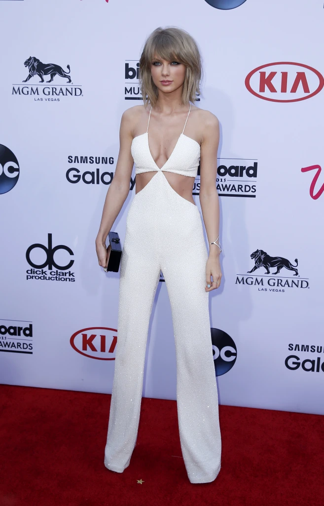
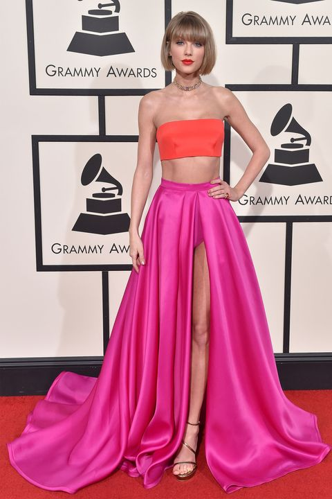
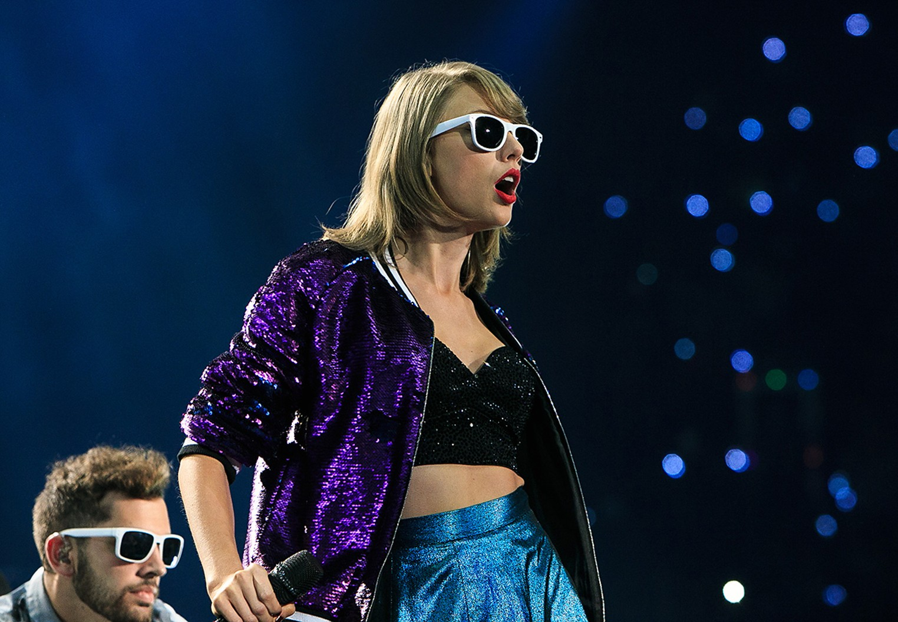
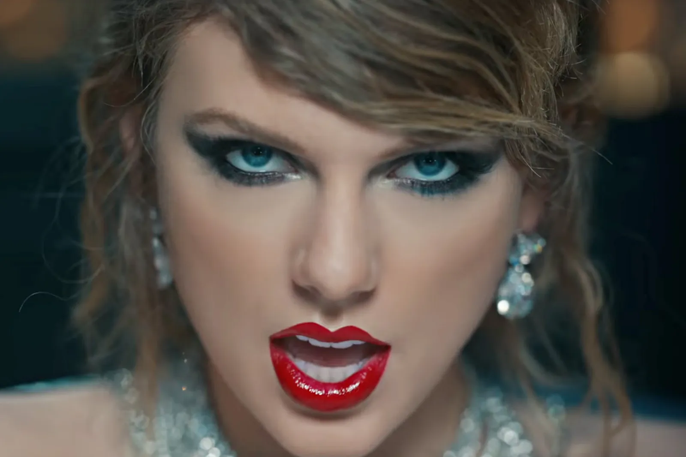
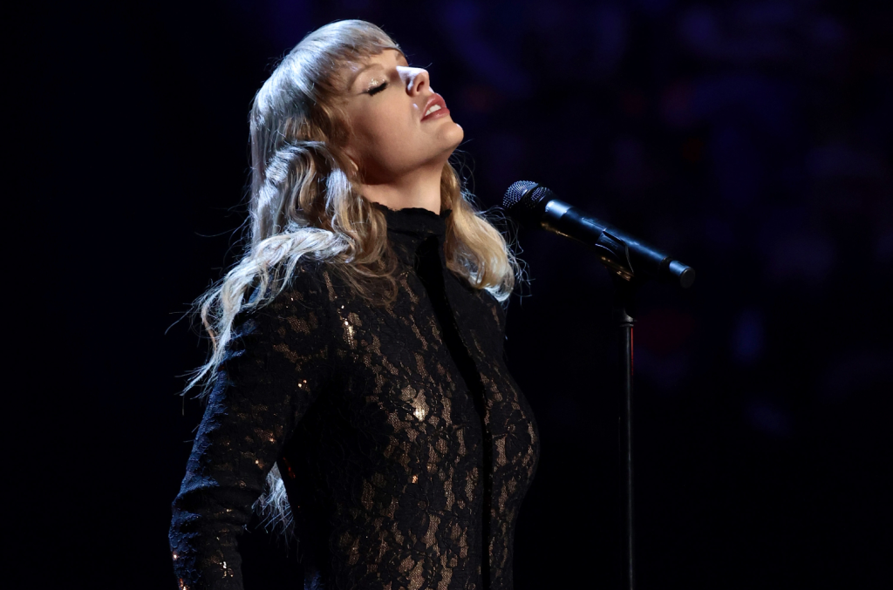
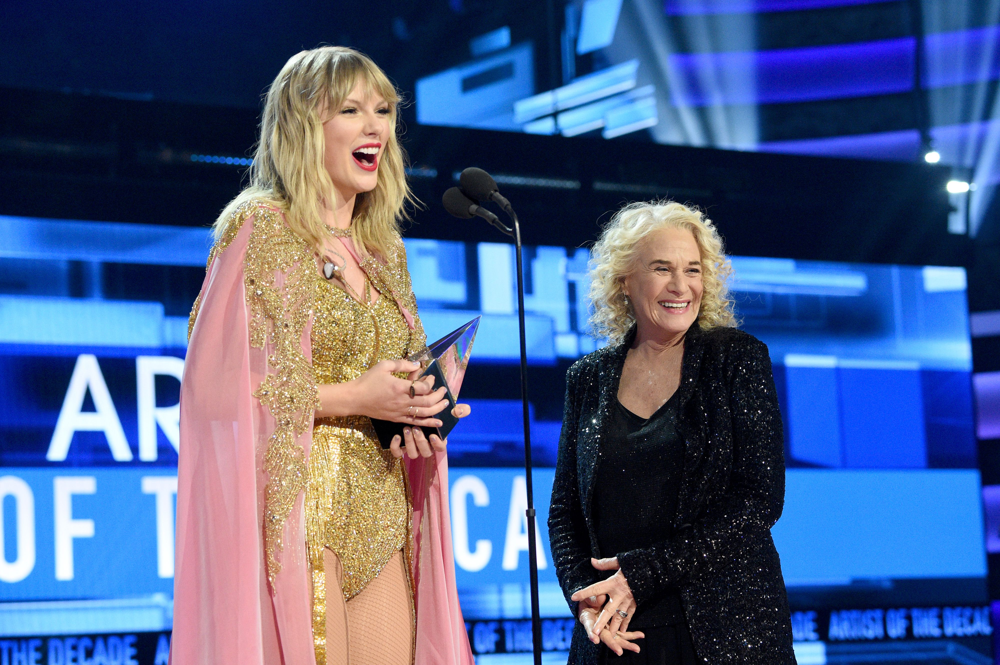

TAYLOR SWIFT
The Music Industry
The Music Industry
The Music Industry
SweetHeart Of America
SweetHeart Of America
SweetHeart Of America
Artist Of the Decade
Artist Of the Decade
Artist Of the Decade
ABOUT HER
An american singer, songwriter, director,
record producer, actress, philanthropist and
businesswoman.





